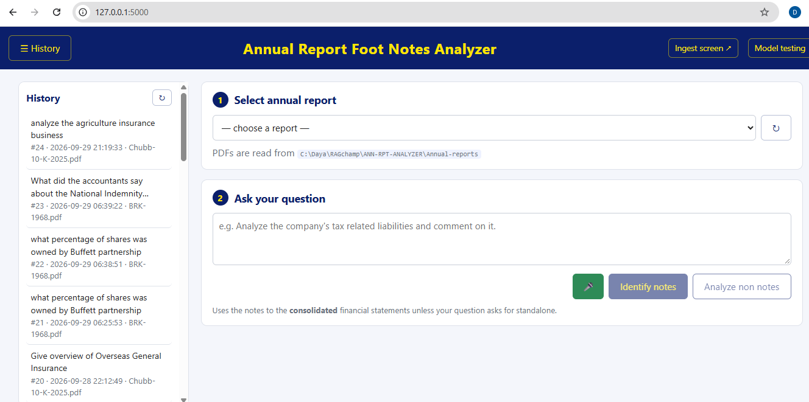
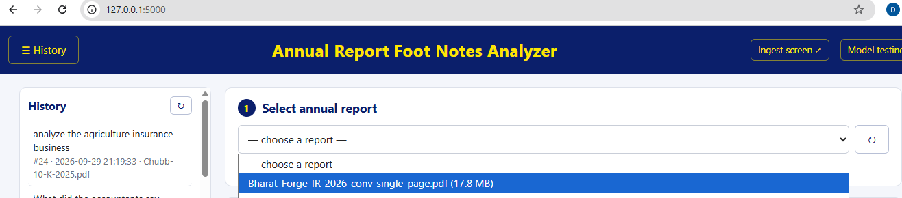
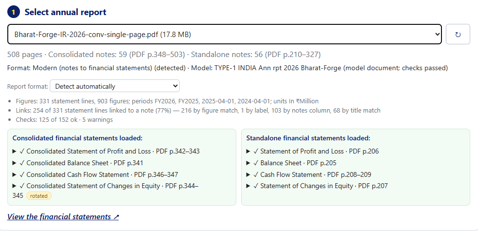
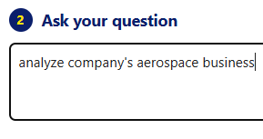
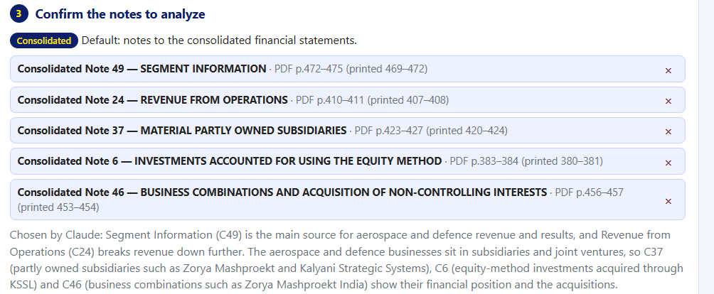
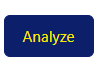

Table of Contents
1. The Run at a Glance
The app works on one principle: Python decides what Claude sees, and Claude only analyzes it. Claude never gets the 508-page PDF. It gets about 50,000 characters chosen by the app: the five notes you confirmed, the four consolidated financial statements, and a short list of figures the app linked between them. Claude has no tools, so it cannot read anything else.
Your run made two Claude calls: a small one (16,554 characters, 10 seconds) to choose the notes from their titles, and a big one (50,258 characters, 60 seconds) to analyze them. Between the two, the app stopped and waited for you to confirm the notes.
Timeline from WEB-APP\logs\app.log
| Time (2026-10-06) | What happened | Request | Took |
|---|---|---|---|
| 21:54:52 | First screen opened; report list and History loaded | GET /, /api/reports, /api/history | < 1 s |
| 21:58:45 | Bharat Forge report selected; its package opened and summarised | POST /api/index | ~0.1 s |
| 22:00:32 | Identify notes clicked; identify job started | POST /api/identify | |
| 22:00:43 | Claude call #1 finished (prompt 16,554 chars); notes C49, C24, C37, C6, C46 | job | 10.4 s |
| 22:00:43 – 22:02:08 | You read and confirmed the notes (the app waits) | — | — |
| 22:02:08 | Analyze clicked; analyze job started | POST /api/analyze | |
| 22:03:09 | Claude call #2 finished (prompt 50,258 chars, answer 10,207 chars); saved as history #25 | job | 60.6 s |
2. Before You Start: Ingestion (Done Once)
Every PDF fact the app uses was worked out before you asked anything. The first time a report is selected, the Ingester (WEB-APP\ingest\) reads the whole PDF once and writes a report package: one SQLite file holding everything the Analyzer needs. The Analyzer (WEB-APP\analyzer\), which handled your question, never opens a PDF. It only reads this package.
For Bharat Forge the package was built on 2026-09-29 at 05:57:59 in 27.6 seconds and saved as WEB-APP\cache\packages\Bharat-Forge-IR-2026-conv-single-page-fbe10a171fc5ab27.rptpkg.db. The fbe10a171fc5ab27 part is the start of the PDF's SHA-256 fingerprint, so a changed PDF gets a new package.
The app only reads report formats it has been taught. Each format has a model document in MODEL-DOCS\. This PDF's SHA-256 is the same as the registered model TYPE-1-INDIA-Ann-rpt-2026-Bharat-Forge, so it matched as "model document" straight away, with profile in-indas-2020s (the rules for modern Indian Ind AS reports). A report that matches no model is blocked: it cannot be analyzed until its model is added.
Notes pages are found by their running header ("Notes to Consolidated Financial Statements") at the top of the page. Note headings are bold rows at the left margin that start with a number, in sequence. Each note runs from its heading to just before the next one. For example, Note 49 SEGMENT INFORMATION starts at y = 578 on PDF page 472 and ends on page 475 (printed pages 469–472). Result: 59 consolidated notes (PDF 348–503) and 56 standalone notes (PDF 210–327). Each note's sub-headings are kept too. They matter later, because the note picker sees them.
In the 15 pages before each notes section, the app looks for pages whose title starts with a statement name. Consolidated: Balance Sheet p.341, Profit and Loss p.342–343, Changes in Equity p.344–345, Cash Flow p.346–347. The equity pages are printed sideways, so they are redrawn upright (show_pdf_page(rotate=-90)) before their text is read. That is the rotated tag you saw in step 1. Tables are rebuilt row by row from text positions as label | note | FY2026 | FY2025.
The clipped text of all 115 notes is stored, cut to each note's exact extent with headers and footers removed. So are the text of every page and the report's other sections, cut into passages. Then:
- Figures: 331 statement lines with 903 figures, the periods (FY2026, FY2025) and the unit (In ₹Million).
- Links from each statement line to a note: the note number in the statement's Notes column ("references"); a 5+ digit figure printed in both the line and the note ("ties_to"); or a title match ("mentions"). 254 of 331 lines were linked.
- Checks: subtotals, assets = equity + liabilities, figures carried between statements, and notes whose cited figure cannot be found. 125 of 152 passed, with 5 warnings.
3. Screen 1: The First Screen Opens

http://127.0.0.1:5000.GET / returns index.html, which loads style.css and app.js. Then app.js makes two calls:
loadReports()→GET /api/reports. This lists every*.pdfinAnnual-reports\with its size, and fills the dropdown. There are several PDFs, so it shows "— choose a report —". With only one PDF it would select it automatically.loadHistory()→GET /api/history. This readsPrompt-History\Claude-code-prompt-N-question.txtfiles, newest first, to fill the History sidebar (#24 Chubb, #23 BRK-1968 …). Clicking an entry reopens that answer and its thread.
The buttons Identify notes and Analyze non notes stay disabled (greyed) until a report is loaded and a question is typed. The green 🎤 button types the question by voice (the browser's speech recognition).
4. Screen 2: Selecting the Report

selectReport()→app.py api_index()The browser shows "Reading the report, indexing its notes and loading the financial statements…" and sends POST /api/index {"report": "Bharat-Forge-IR-2026-conv-single-page.pdf"}. The server first checks that the name is one of the listed PDFs (resolve_report), so a crafted name cannot reach other files.
open_report() → ensure_package()→rptpkg/store.pyThe package is found by the PDF's SHA-256. _usable() then checks that it was built by the current ingester (INDEX_VERSION 34), with the same profile version (in-indas-2020s v2), and against the current model registry. All three matched, so the package was simply opened in about 0.1 s. No PDF page was read, and the log shows no "Ingested …" line for this run.
If any check had failed (for example after a code change that bumped INDEX_VERSION), the whole ingestion of section 2 would have run again first, about 28 s for this report.
report_summary()The reply holds the page count and notes summary, the format and model, the quality lines (only those starting Figures:, Links:, Checks: or Warning:), each section's statements with their pages, a rotated flag and their text, and the list of all 115 notes (for the "add a note" dropdown in step 3).
5. Screen 3: What Step 1 Shows

app.js: showFormat(), renderQuality(), renderStatements().Each line, explained
| On screen | What it means and where it comes from |
|---|---|
| 508 pages · Consolidated notes: 59 (PDF p.348–503) · Standalone notes: 56 (PDF p.210–327) | The Notes Index (section 2, INGEST 2). Page numbers are always PDF page numbers. The printed page is 3 lower in this report. |
| Format: Modern (notes to financial statements) (detected) | The report's format, found automatically. The Report format dropdown below it lets you force another format. That rebuilds the package. |
| Model: TYPE-1 INDIA Ann rpt 2026 Bharat-Forge (model document; checks passed) | The model match (INGEST 1). "Model document" means this PDF is the model, matched by fingerprint. "Checks passed" means its acceptance checks (notes found, statements found, the expected wording) all succeeded. |
| Figures: 331 statement lines, 903 figures; periods FY2026, FY2025, 2025-04-01, 2024-04-01; units In ₹Million | ingest/figures.py: every number in the statements, tied to its line and period. The two dates are the opening balances in the equity statement. |
| Links: 254 of 331 statement lines linked to a note (77%) — 216 by figure match, 1 by label, 103 by notes column, 68 by title match | ingest/links.py. A line can be linked in more than one way, so the parts add up to more than 254. These links are used twice later: as hints for choosing notes, and as LINKED FIGURES in the prompt. |
| Checks: 125 of 152 ok · 5 warnings | Automatic arithmetic checks. Lines that are not simple sums are reported as "unverified", not as failures. |
| The two green boxes, each line with ✓ | The four primary statements per section, found and loaded. Click ▶ to see the exact text that will be sent to Claude. The rotated tag marks the sideways equity pages that were turned upright. |
| View the financial statements ↗ | Opens /statements?report=… in a new tab: the same statements rebuilt as tables from the package. |
6. Screen 4: Asking the Question

identify("notes")- Identify notes (what you clicked):
mode = "notes". It analyzes the notes to the financial statements and the primary statements, and gives an accounting-focused answer with an Impact on the financial statements section. - Analyze non notes:
mode = "business". It analyzes passages from the report's own narrative sections (MD&A, Board's report, CMD's message …), with at most two notes to confirm the figures, and gives a shorter business answer.
The browser sends POST /api/identify {"report": "…", "question": "analyze company's aerospace business", "mode": "notes"}. The server starts identify_job in a background thread and immediately returns a job_id. The browser then shows the spinner, "Identifying the relevant notes…", and polls GET /api/jobs/<id> every second. Jobs run in the background because Claude calls can take minutes, longer than a browser request should wait.
7. Identifying the Notes (Claude Call #1)
analyzer/jobs.py identify_job() runs four things in order: statement hints, scope, the Claude selector call, and a size estimate. Only the third uses Claude. The rest is plain Python reading the package.
question_words() → statement_hints()The question is reduced to its content words. Common words like analyze and company's are dropped (STOPWORDS), and synonyms are added (e.g. "tax" brings in "deferred tax"). For your question that leaves {"aerospace", "business"}.
The app then looks for statement lines whose label contains one of those words, and follows each line's links to notes. For a tax question this finds "Current tax (P&L)" → Note 21. No line in the Bharat Forge statements contains "aerospace" or "business", so the hint list was empty.
That is why your step 3 had no "Suggested by the financial statements: + Note …" row, and why the selector prompt below has no SUGGESTED block. The statements simply do not show an aerospace line.
detect_scope()Regular expressions look for "standalone", "parent company only", "not consolidated", "both" and similar words. Your question has none, so the scope is consolidated, with the reason "Default: notes to the consolidated financial statements." This is the badge and sentence at the top of step 3.
_selector_prompt()→prompts/selector_template.txt + prompts/selector_system.txtOne line is written per consolidated note: its id (C + number), its title, and up to 8 sub-headings. These are filled into the template's {{NOTES_LIST}}, {{QUESTION}}, {{SCOPE}} and {{MAX_NOTES}} (5). The result is 16,554 characters on 75 lines. These are the real lines for the five notes that were later chosen (sub-headings cut short here):
An analyst asked this question about a company's annual report:
QUESTION: analyze company's aerospace business
Scope already decided: consolidated financial statements. Do not change it.
...
C6: INVESTMENTS ACCOUNTED FOR USING THE EQUITY METHOD [sub-headings: Unquoted equity instruments
(fully paid); - Investment in associates; - Investments in joint ventures; c. During the previous
year, the Group acquired through Kalyani Strategic Systems Limited (wholly owned subsidiary of th]
C24: REVENUE FROM OPERATIONS [sub-headings: Sale of products; Sale of services; Other operating revenues; ...]
C37: MATERIAL PARTLY OWNED SUBSIDIARIES [sub-headings: Proportion of equity interest held by
non-controlling interests:; ...; Zorya Sagar Manas Eternus; Mashproekt Technologies Advanced ...]
C46: BUSINESS COMBINATIONS AND ACQUISITION OF NON-CONTROLLING INTERESTS [sub-headings: Acquisition
of Zorya Mashproekt India Private Limited; ...; Acquisition of k Drive Mobility Solutions ...]
C49: SEGMENT INFORMATION [sub-headings: ...; Segment revenue; Revenue from external customers; ...]
...
Choose the notes whose content is needed to answer the question thoroughly.
- Choose the primary note(s) first.
- Also choose a closely related note if it materially adds to the answer ...
- Choose at most 5 notes, and prefer fewer. ...
Reply with ONLY this JSON (no markdown fences, no other text):
{"notes": ["C21"], "reason": "one or two sentences explaining the choice"}The sub-headings are what let Claude connect "aerospace" to notes whose titles never mention it: Kalyani Strategic Systems (the defence subsidiary) appears under C6, and Zorya Mashproekt (gas-turbine engines) appears under C37 and C46.
run_claude()→claude.exe -pA fresh, stateless Claude Code process is started for each call. The prompt goes in on stdin, because Windows limits a command line to about 32,000 characters:
claude.exe -p --system-prompt "<prompts/selector_system.txt>" --tools "" --no-session-persistence < selector prompt--tools "": Claude can use no tools. It cannot open the PDF, search or browse. It answers only from the text it was given.--no-session-persistence: nothing is remembered between calls.- No
--model: the Claude Code CLI's default model is used. No--effortfor this small call, so the log says "effort default".
Claude replied with JSON whose reason is the sentence you saw under the chips:
{"notes": ["C49", "C24", "C37", "C6", "C46"],
"reason": "Segment Information (C49) is the main source for aerospace and defence revenue and results, and Revenue from Operations (C24) breaks revenue down further. The aerospace and defence businesses sit in subsidiaries and joint ventures, so C37 (...), C6 (...) and C46 (...) show their financial position and the acquisitions."}_parse_selector_reply() pulls the JSON object out of the reply, keeps only ids that really exist in the consolidated scope, and caps them at 5. If the call had failed (timeout, bad JSON, no valid id), the app would have fallen back to keyword_select(), which scores titles against the question words, and the screen would say "Chosen by keyword match". Notes named in the question ("Note 41") are always added first.
extract_selection()The five notes' stored text is looked up in the package and measured: 25,237 characters, well below the 150,000-character limit (MAX_CONTEXT_CHARS). The log line records it all:
22:00:43,300 INFO claude_client: claude -p finished in 10.2s (prompt 16554 chars, effort default, exit 0)
22:00:43,322 INFO app: Identify (Bharat-Forge-IR-2026-conv-single-page.pdf, 10.4s): scope=consolidated method=claude notes=['C49', 'C24', 'C37', 'C6', 'C46'] chars=25237The job's result (scope, reason, method, the five notes with pages, hints, size) is picked up by the browser's next poll.
8. Screen 5: Confirming the Notes

app.js showConfirm() and renderChips().- Consolidated badge + the scope reason (STEP 5).
- One chip per note: Consolidated Note 49 — SEGMENT INFORMATION · PDF p.472–475 (printed 469–472). The page ranges come from the Notes Index. Click × to drop a note.
- "Chosen by Claude: …": the selector's reason. If the fallback had been used, it would say "Chosen by keyword match".
- Below (scroll down in the card): an add a note dropdown of all 115 notes, an Or analyze specific PDF pages box (e.g.
80-82), which replaces the notes with whole pages, and the estimated extract size.
This pause is a deliberate design decision: you can check Claude's choice before paying for the long call. You kept all five notes.
9. Screen 6: Analyze (Building the Prompt)

Clicking Analyze sends POST /api/analyze {"report": "…", "question": "…", "notes": ["C49","C24","C37","C6","C46"], "passages": [], "pages": "", "mode": "notes"}. The server starts analyze_job. The spinner reads "Extracting the notes and asking Claude for an in-depth analysis…".
extract_note()→rptpkg/reader.py unit_text()No PDF is read. Each note's text was clipped at ingestion (from its heading to the next note's heading, tables as label | FY2026 | FY2025, page markers kept) and is now looked up by unit id:
| Unit | Note | PDF pages (printed) | Characters |
|---|---|---|---|
C49 | Segment information | 472–475 (469–472) | 6,212 |
C24 | Revenue from operations | 410–411 (407–408) | 1,674 |
C37 | Material partly owned subsidiaries | 423–427 (420–424) | 11,138 |
C6 | Investments accounted for using the equity method | 383–384 (380–381) | 2,583 |
C46 | Business combinations and acquisition of NCI | 456–457 (453–454) | 3,622 |
| Notes block | 25,237 | ||
A few lines of what Claude actually read for Note 49:
=== Note 49 — SEGMENT INFORMATION (Consolidated) ===
--- PDF page 472 (printed page 469) ---
49. SEGMENT INFORMATION
...
The Group's business is divided into three reporting segments comprising "Forgings", "Defence" and "Others" ...
--- PDF page 474 (printed page 471) ---
3.2 Segment Income tax expense/(income)
a Forgings | 5,093.53 | 5,018.46
b Defence | 442.98 | 289.78
c Others | 241.23 | 117.26statement_sections()→analyzer/statement_info.py sections_text()All five notes are consolidated notes, so the consolidated P&L (p.342–343), Balance Sheet (p.341), Cash Flow (p.346–347) and Changes in Equity (p.344–345, rotated) are added from the package. They go with every question, so Claude can trace each note into the statements. This is what produces the Impact on the financial statements section.
linked_block()From the links built at ingestion, the app lists every statement line linked to one of the five notes (up to 30), with its figures and how the link was found, plus the automatic checks on those lines. Real lines from your prompt:
- Revenue from operations (Consolidated Statement of Profit and Loss, PDF p.342) | FY2026 168,116.53 | FY2025 151,228.03
-> Note 24 (cited in the Notes column, same figure in the note); Note 49 (same figure in the note)
- (h) Investments accounted for using the equity method ... (Consolidated Balance Sheet, PDF p.341) | FY2026 614.14 | FY2025 905.08
-> Note 49 (same figure in the note); Note 6 (cited in the Notes column, same figure in the note)
- Non-controlling interests (Consolidated Balance Sheet, PDF p.341) | FY2026 (230.16) | FY2025 (327.53) -> Note 37 (cited in the Notes column)
CHECKS (automatic)
- ok: Total assets 222,599.55 vs 'Total equity and liabilities' 222,599.55 (FY2026)
- ok: Total assets 200,883.21 vs 'Total equity and liabilities' 200,883.21 (FY2025)
- warn: 'Non-controlling interests' cites C37, but none of its figures ((230.16), (327.53)) is printed thereThis block is a map for Claude, not the evidence. The system prompt tells Claude to verify each link against the statements and notes. In your answer Claude did exactly that with the warning: it added up Note 37's NCI balances to (229.15) and wrote "The app's 'warn' is correct that the BS figure itself is not printed in Note 37."
check_size()→claude_client.py fill_prompt()→prompts/analysis_template.txtStatements plus notes come to 44,604 characters, under the 150,000 limit. fill_prompt() replaces the template's {{KEY}} placeholders in one pass. The finished prompt has this order (line numbers from Prompt-History\Claude-code-prompt-25-prompt.txt):
1 Annual report / Statements / Notes provided / Primary financial statements provided
6 QUESTION: analyze company's aerospace business
8 Structure your answer as: ## Summary · ## Key figures · ## Detailed analysis ·
## Impact on the financial statements (### P&L, ### Balance Sheet, ### Cash Flow, ### Changes in Equity) ·
## Red flags & areas for follow-up · ## Sources
27 ----- PRIMARY FINANCIAL STATEMENTS (PDF page numbers) ----- 19,367 chars
397 ----- END OF PRIMARY FINANCIAL STATEMENTS -----
399 ----- LINKED FIGURES ... ----- 3,509 chars
423 ----- END OF LINKED FIGURES -----
425 ----- NOTES EXTRACTED FROM THE ANNUAL REPORT (PDF page numbers) ----- 25,237 chars
914 ----- END OF NOTES -----The system prompt (prompts/analysis_system.txt) sets Claude's role ("senior financial analyst and forensic accountant") and its rules: use only the material given, cite the note or statement and PDF page for every figure, connect the notes to all four statements, show calculations, flag anything inconsistent, and say plainly when information is missing. A modern Ind AS report gets no extra REPORT PROFILE block. Old, scanned and US 10-K reports do.
10. Claude Call #2: The Analysis
call_claude()→claude_client.py _run_streaming()→claude.exe -p- The prompt is first written to
WEB-APP\claude-prompt-input.txt(the last prompt sent, for inspection), and the time sent is recorded. - Same
claude -ppattern as call #1 (stdin, no tools, no session), plus--effort low(config.CLAUDE_EFFORT; setANN_RPT_CLAUDE_EFFORT=defaultto change it) and--output-format stream-json. - Streaming: as Claude writes, each piece of text is put into the running job. The browser's poll gets it rendered (
partial_html), so the spinner changes from "Claude is thinking about your question…" to "Claude is writing the answer — you can start reading below…", and the answer appears while it is being written. - The finished reply (10,207 characters) is written to
WEB-APP\Claude-prompt-output.txt.
22:03:08,955 INFO claude_client: claude -p finished in 60.3s (prompt 50258 chars, effort low, exit 0)
22:03:09,066 INFO app: Analyze (Bharat-Forge-IR-2026-conv-single-page.pdf, 60.6s): notes=['C49', 'C24', 'C37', 'C6', 'C46'] extract=25237 chars statements=19367 chars answer=10207 chars sno=25render_markdown()→static/app.js startThread() / addTurn()Claude's Markdown is HTML-escaped first, then rendered to HTML, so text from the report can never run as code in the page. addTurn() shows your question as a bubble, the rendered answer, and the buttons Copy, .md, .html and Open saved report ↗. The Source sent to Claude (financial statements + notes) panel shows exactly what was sent, and the line above the answer lists the report, the notes and the statements. The follow-up box appears below, and the History sidebar refreshes with #25 at the top.
11. Reading the Answer: Where Each Part Came From
Every number in your answer had to come from the ~50,000 characters above, because Claude had no other source and no tools. The table shows which input each part of the answer was built from.
| Part of the answer | What it says (example) | Where it came from |
|---|---|---|
| Summary: "The notes do not report an aerospace business" | Three segments only: Forgings, Defence, Others. "The word 'aerospace' does not appear in any note or statement provided." | Note 49's opening text (p.472). Saying so plainly instead of guessing follows the system-prompt rule "If information needed to answer is not in the material, say so plainly". |
| Key figures table | Defence revenue 17,571.72 vs 17,719.86; result 814.97 vs 1,864.23; D&A 242.45 vs 80.07 … | Note 49's segment tables (p.473–475) for the Defence rows. Note 37 (p.424–425) for Kalyani Rafael (KRAS). Changes, % changes and margins were calculated by Claude, marked calc. |
| Detailed analysis: aero and defence entities | Defence equity-accounted investments 377.40 = Aeron 160.83 + Edgelab 216.57; Zorya: gas-turbine engines, nil revenue | Note 6 (p.383) cross-added with Note 49 (p.474). Note 46 (p.456) and Note 37 for Zorya. These are the notes Claude #1 chose because of their sub-headings. |
| Checks on the segment arithmetic | Segment revenue less inter-segment = 168,116.53 ✓; segment tax 5,777.74 ✓ | Note 49 against the P&L in PRIMARY FINANCIAL STATEMENTS. The LINKED FIGURES had already pointed out that Revenue from operations and the tax total appear in both. |
| Impact on the financial statements (4 sub-sections) | Revenue 168,116.53 (P&L p.342); equity-method investments 614.14 (BS p.341); D&A add-back 9,709.24 (CF p.346); NCI moves (327.53) → (230.16) (SOCE p.344) | The four statements, required by the analysis template's structure. NCI is checked against the CHECKS warn line. |
| Red flags | Defence tax rate 57.4%; segment liabilities 49,259.68 vs total liabilities 127,031.31; K Drive cash outflow 4,986.23 (CF) vs 5,540.88 (note); typo "₹1,2582.09 million" | Claude comparing notes with statements, as the system prompt asks: "Flag anything unusual, inconsistent … and typos in the source." |
| Sources | Notes 49, 24, 37, 6, 46 with PDF pages; the four statements with pages | The page markers (--- PDF page 472 (printed page 469) ---) in the prompt. That is why citations use PDF page numbers. |
What the app checks, and what it does not
The app guarantees the input: the right notes, verbatim, with the right pages, plus the statements and the automatic CHECKS. It does not re-check Claude's own arithmetic or conclusions (the 57.4% tax rate, the 11.3% return on net segment assets, "probably linked to the K Drive acquisition"). Every figure is cited to a note and page so that you can check it quickly. Treat the red flags as questions to verify, not findings.
12. What Was Saved
save_thread()File (under WEB-APP\) | What it holds |
|---|---|
Analysis-history\Bharat-Forge-IR-2026-conv-single-page-1-20261006-220208.html | The styled report: RAG Champ nav bar, light-blue context box (report, scope, notes, pages, statements), the answer. The -1- means prompt 1 of the thread (follow-ups are 2, 3 …). 20261006-220208 is the time the prompt was sent. This is the Open saved report ↗ link. If saving fails, the failure is logged but the analysis still succeeds. |
Prompt-History\Claude-code-prompt-25-question.txt | A metadata header (Asked at 2026-10-06 22:02:08, Kind analysis, Report, Scope, the five notes with PDF pages, every PDF page sent, the four statements, Thread id, Saved HTML), then the question. History #25 is the next free number. |
Prompt-History\Claude-code-prompt-25-prompt.txt | The full 50,258-character prompt, so the run can be reproduced or audited exactly. |
Prompt-History\Claude-code-prompt-25-answer.txt | Claude's reply as Markdown. |
cache\threads\f58caf031a65430caa3f5dc12683b1b2.json | The conversation thread: notes, extract, statements, the first turn, and the package's SHA-256 and schema version. A follow-up continues from here, even after a restart or when reopened from History. |
claude-prompt-input.txt, Claude-prompt-output.txt | The last prompt and reply (overwritten each time). |
logs\app.log | Timings, chosen notes and sizes (the lines quoted above). |
followup_job()→prompts/followup_template.txtA follow-up first searches the whole report again: the selector runs on the follow-up question plus the first question, and up to 3 new notes are added to the thread. The five you already have stay, and there is no pause this time. Then a new claude -p call gets the thread's notes, statements, LINKED FIGURES, the conversation so far and the new question. The answer says what was added, and it is saved as …-2-<time>.html and history #26. Writing "Note 41" in a follow-up adds that note directly.
13. Things Worth Noticing in This Run
"Aerospace" is in the report, just not in the notes
The answer is right that no note or statement uses the word "aerospace". The notes report segments (Forgings, Defence, Others), not end markets. The rest of the annual report does discuss aerospace: in the package, 20 of the report's 188 passages contain the word. Ranked for your question, the best passages are:
- Statutory Reports › Management Discussion & Analysis › Aerospace Business (PDF 80)
- Corporate Overview › Manufactured Capital (PDF 46–48)
- Corporate Overview › About Bharat Forge (PDF 15–18)
- Corporate Overview › From the CMD's Desk (PDF 25–30)
- Statutory Reports › Board's Report › International Business (PDF 89)
Tip: for a business question like this one, Analyze non notes would send those passages (with up to two notes, e.g. Note 49, to confirm figures). That gives management's own description of the aerospace business. Identify notes is the better button for accounting questions (tax, debt, leases, related parties …). You can also run both and compare.
No statement hints, so Claude chose from titles and sub-headings alone
For a tax question, statement lines such as "Current tax" point straight at Note 21, and the step-3 card shows "Suggested by the financial statements". Here nothing in the statements says "aerospace", so the hint list was empty, and Claude #1 relied on the note sub-headings that name the defence and gas-turbine subsidiaries. The step-3 pause is where you can correct such a choice, for example by adding Note 3 (property, plant and equipment) for capex.
A small cosmetic item in LINKED FIGURES
The P&L's "Non-controlling interests" line on p.343 appears three times in the block (its attributions of profit, total comprehensive income and OCI: 97.37, 97.37 and 0.00), all linked to Note 46 by title match. This does no harm, because Claude reads the statements themselves, but it is a known duplicate-label case in linked_block().
14. Files Involved, Step by Step
| Screen / step | Browser | Server (Python) | Prompt files |
|---|---|---|---|
| Ingestion (once) | ingest.js (Ingest screen) or step 1 | ingest/pipeline.py, models/match.py, notes_index.py, statements.py, clip.py, tables.py, figures.py, links.py, quality.py, narrative/, rptpkg/writer.py | — |
| 1. First screen | index.html, app.js loadReports(), loadHistory() | app.py /, /api/reports; analyzer/routes.py /api/history, history.py | — |
| 2–3. Select report | selectReport(), showFormat(), renderQuality(), renderStatements() | app.py /api/index → ingest/pipeline.open_report() → analyzer/routes.report_summary() | — |
| 4. Question → Identify notes | identify(), runJob() | analyzer/routes.py /api/identify, webcommon.start_job() | — |
| Identify job | polls /api/jobs/<id> | analyzer/jobs.identify_job(), linked.statement_hints(), note_selector.select_notes(), claude_client.run_claude(), extract.extract_selection() | selector_system.txt, selector_template.txt |
| 5. Confirm notes | showConfirm(), renderChips(), renderHints() | — (the app waits) | — |
| 6. Analyze | analyze(), runJob() | analyzer/jobs.analyze_job(), extract.py, context.py, statement_info.py, linked.linked_block(), claude_client.py | analysis_system.txt, analysis_template.txt |
| Answer + saving | startThread(), addTurn() | webcommon.render_markdown(), report_html.py + templates/analysis_report.html, history.py, thread JSON | — |
| Follow-up | followup() | analyzer/jobs.followup_job() | followup_template.txt |
For each mechanism in more depth (Notes Index rules, rotation, links and checks, model documents, scanned and old reports), see How the Annual Report Foot Note Analyzer Works.